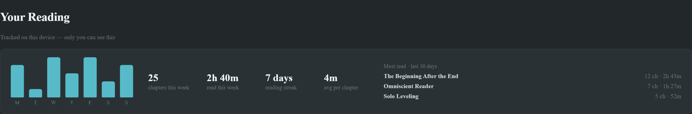
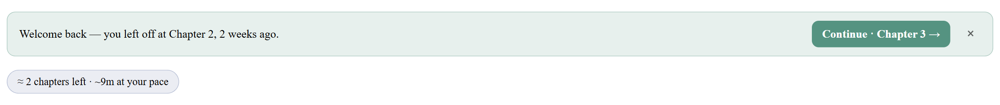
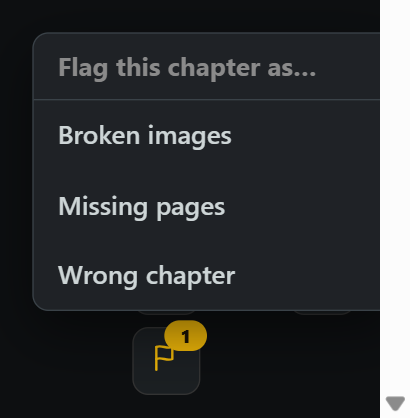
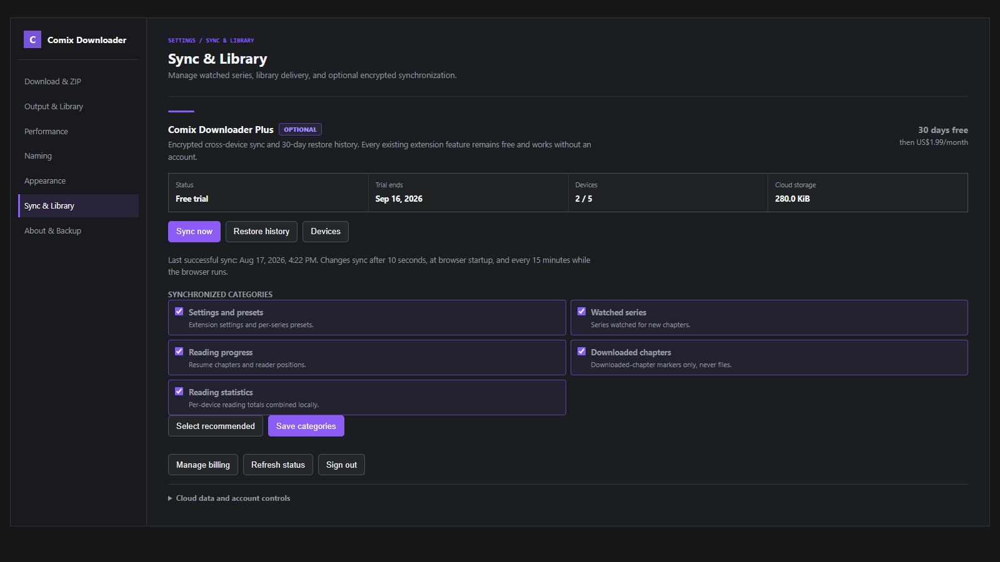
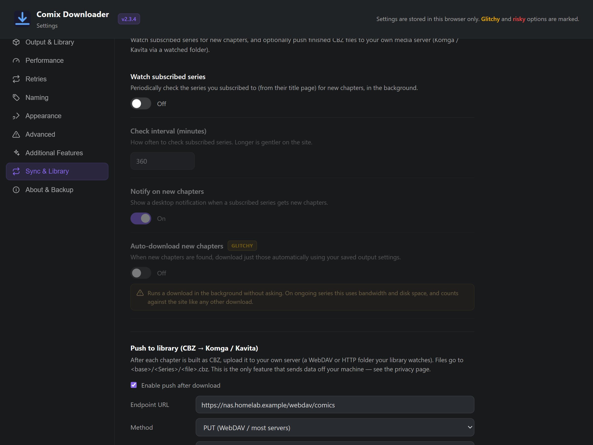
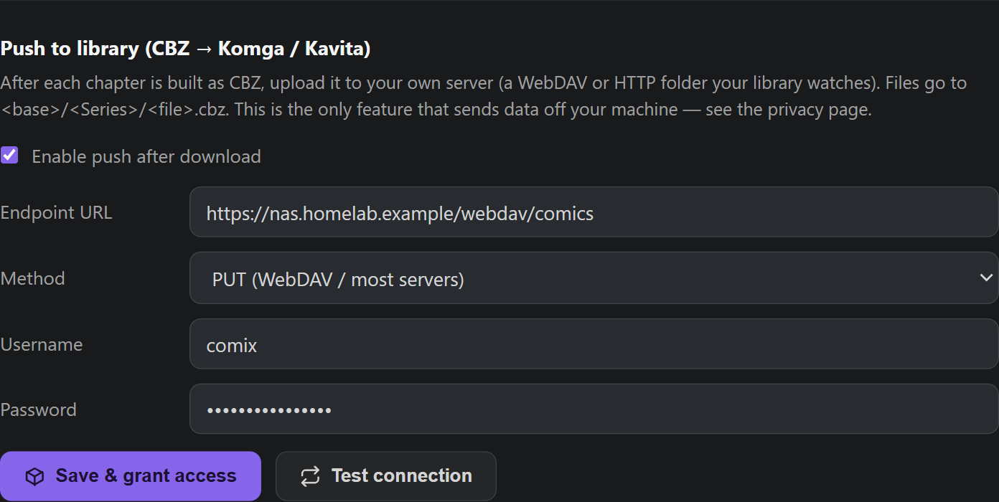

Documentation
Everything you need to install Comix Downloader and start saving chapters from comix.to or comix.ws. Pick your platform below.
Overview
Comix Downloader is a Manifest V3 browser extension that adds download buttons directly to title pages on comix.to and comix.ws. You can grab a single chapter, or download an entire series at once — every chapter is fetched, packaged into its own folder, and bundled into a single ZIP, named and sorted.


Install
The signed Firefox add-on and Chrome Web Store listing are available now. The dedicated Opera package has been submitted to Opera Add-ons and is awaiting moderation.
Firefox (desktop)
The extension is published and signed on Mozilla Add-ons — one click to install.
- Open the listing on addons.mozilla.org.
- Click Add to Firefox and confirm the permissions prompt.
- Visit a title page on comix.to or comix.ws — the buttons appear automatically.
Chrome (desktop)
The extension is published and reviewed on the Chrome Web Store — one click to install. The same tested Chromium runtime powers the Opera, Brave, and Vivaldi builds.
- Open the listing on the Chrome Web Store.
- Click Add to Chrome and confirm the permissions prompt.
- Visit a title page on comix.to or comix.ws — the buttons appear automatically.
Opera and Opera GX
The Opera Add-ons listing has been submitted, but Opera has not yet verified or published it. The homepage install button will be enabled as soon as moderator approval is complete.
In the meantime, Opera and Opera GX can install the reviewed Chrome package directly:
- In Opera, open Comix Downloader on the Chrome Web Store.
- Click Add to Opera and follow the confirmation prompts.
- If Opera opens the extension manager, click Install to finish.
- Visit a title page on comix.to or comix.ws — the buttons appear automatically.
This Chrome Web Store route is supported by Opera. Every GitHub release also includes a dedicated opera ZIP for the pending Opera Add-ons listing.
Prefer to run it from source, or want the latest unreleased build? Install it unpacked in developer mode:
- Download and extract the matching package from GitHub Releases.
- Open
chrome://extensionsoropera://extensions. - Toggle Developer mode on (top-right).
- Click Load unpacked and select the unzipped folder.
- Head to a title page on comix.to or comix.ws — buttons appear automatically.
Linux
On Linux the extension installs through your browser exactly like on Windows or macOS — one click from the store (the Firefox add-on, or the Chrome Web Store in any Chromium browser). If you still need to install a browser first, pick your browser and distribution for the command:
Firefox
Google Chrome
Ubuntu / Debian
Fedora / RHEL
Arch / Manjaro
openSUSE
Flatpak (any distro)
Gentoo
Void
Alpine
NixOS
sudo apt update && sudo apt install firefox- Run the command above to install your chosen browser.
- Open the Firefox add-on and click Add to Firefox — or, in Chrome / any Chromium browser, the Chrome Web Store listing and Add to Chrome.
- Visit a title page on comix.to or comix.ws — the buttons appear automatically.
Prefer the open-source Chromium instead of Google Chrome? Install chromium (Fedora, Arch, openSUSE, Void, Alpine), chromium-browser (older Ubuntu/Debian), or org.chromium.Chromium from Flathub. Brave and Vivaldi work too — add the extension from the Chrome Web Store.
Android
There are three ways to read on Android, depending on what you want. If you just want to read and download comix titles offline, Option A (Mihon) is the one to use — it's the most reliable, and it auto-updates.
The desktop/Firefox version adds download buttons onto the comix.to web page. Mihon works completely differently. Mihon is its own reading app — a separate app on your phone with its own library, reader and download manager. Our Comix source teaches Mihon how to find comix.to titles, chapters and pages.
So after you install the source you will not see anything change if you open comix.to in a web browser — that's expected, and it's the number-one point of confusion. Everything happens inside the Mihon app instead: you browse comix, open a title, and download from Mihon's own menu. The browser is never involved.
Option A — Mihon (recommended for offline reading). You browse and download entirely inside the Mihon app, with auto-updates. Follow every step in order:
- Install the Mihon app. Get it from mihon.app/download and open it once so it finishes setting up. This is a standalone app — it is not a browser and not our extension.
- Add our source to Mihon. In Mihon, tap More (bottom-right) → Settings → Browse → Extension repos. Tap the + button, paste the address below exactly, and confirm:
https://raw.githubusercontent.com/n3uralcreativity/comix-downloader/repo/index.min.json - Turn on 18+ sources (required — don't skip). Still on the Settings → Browse screen, enable Show NSFW sources (a.k.a. 18+). Comix is flagged 18+, so with this off it installs fine but stays completely hidden from your Sources list — which is the usual reason people install it and then can't find it.
- Install the Comix extension. Go to the Browse tab (bottom bar) → Extensions. Under a heading like Comix Mihon Extensions you'll see Comix — tap Install and allow the install if Android asks. (If Android blocks it, allow “install unknown apps” for Mihon, then try again.)
- Open the Comix catalogue. Go to the Browse tab and tap Comix under Sources (not the Extensions sub-tab — Sources is where you actually browse). You should now see comix titles loading inside Mihon — this is the moment that tells you it's working. Use the search icon to find a specific series.
- Add a title to your library (optional but recommended). Open a title and tap the heart / Add to library so Mihon can track new chapters for you.
- Download. Open any title, then tap the ⋮ menu → Download → All (or Next, Unread, or a custom range). For a single chapter, long-press the chapter row (or tap its download arrow). Watch progress under More → Download queue.
- Read offline. Downloaded chapters open instantly in Mihon's reader with no connection needed. On disk they live under
Mihon/downloads/Comix/<Manga>/<Chapter>/.
Because the source is installed from our auto-updating repo, Mihon fetches new versions automatically whenever we publish a release — you don't need to reinstall.
That's almost always the 18+ filter. Comix is a NSFW-flagged source, so Mihon lists it under Extensions and installs it, but hides it from Browse → Sources until you enable Settings → Browse → Show NSFW sources. Turn that on and Comix appears in Sources immediately. If it's still missing, fully close and reopen Mihon, and double-check the extension shows as Installed (not Obsolete) in the Extensions list.
Option B — Kiwi Browser if you specifically want the same in-page buttons as desktop. Kiwi installs Chrome Web Store extensions directly, so the easiest route is to open the Chrome Web Store listing in Kiwi and tap Add to Chrome. Or load it unpacked:
- Install Kiwi Browser from the Play Store.
- Download this repo ZIP on your phone and extract it.
- Open Kiwi → go to
chrome://extensions→ toggle Developer mode on. - Tap Load unpacked and select the extracted folder.
- Open a title page on comix.to or comix.ws — buttons appear automatically.
Option C — Firefox for Android. The signed add-on also runs on Firefox for Android — the same one-click install as desktop, with the in-page buttons working natively on your phone.
- Install Firefox for Android from the Play Store.
- Open the add-on listing in Firefox and tap Add to Firefox.
- Visit a title page on comix.to or comix.ws — buttons appear automatically.
iOS & iPadOS (Orion browser)
Comix Downloader does not currently ship a Safari build because Safari Web Extensions require a separate Apple app, Xcode build, signing, and Apple-platform test pipeline. Orion — a free WebKit browser by Kagi — installs Chrome and Firefox extensions on iPhone and iPad. Treat Orion support as experimental: the in-page buttons work, but some advanced download behaviour may be limited by Apple's platform restrictions.
- Install Orion Browser (by Kagi) from the App Store.
- In Orion, open the ••• menu → Settings → the Extensions group, and turn on Chrome extensions (and/or Firefox extensions).
- Open the Chrome Web Store listing (or the Firefox add-on) in Orion and tap Add to Chrome / Add to Firefox.
- Open the ••• menu → Extensions and toggle Comix Downloader on.
- Visit a title page on comix.to or comix.ws — the buttons appear automatically.
Tip: if a download doesn't start, re-check Orion's Extensions screen to confirm Comix Downloader is enabled. Because Orion's extension support is still maturing, a few options may behave differently than on desktop — the Mihon route (Option A above) remains the most reliable for fully offline reading on mobile.
How to use
Once installed, head to a title page on comix.to or comix.ws. The extension injects its controls automatically — it works out of the box, and you can fine-tune everything from the Settings page.
Download an entire series
- Click Download All in the sidebar of the title page.
- An options panel opens — pick ZIP or CBZ, metadata, and which chapters (or just hit Start). See Output, library & sync.
- Every chapter is fetched in order, then packaged as image folders or one
.cbzper chapter inside resumable ZIP parts. - Open the extension popup to watch live progress and the activity log.
Download a single chapter
- Each chapter row has its own download button on the right.
- Click it to save that chapter using your selected ZIP or CBZ format.

What’s new in v2.4
Beyond downloading, v2.4 adds on-site enhancements that make comix.to nicer to use. The comix.to ad and popup blocker is on by default; the other enhancements are opt-in. Manage them from the Settings page (mostly under the “Additional features” and “Home” tabs). Free features keep personal data on your device unless you explicitly configure your own library server or start Plus setup.
A Home page that’s actually yours
Replace comix.to’s Home with a focused layout you control: choose which sections appear and drag them into the order you want — Continue Reading, New Chapters from comics you follow, Recently Followed — plus a unified “What’s New” feed, a featured hero spotlight, a welcome header, and hover previews (cover and synopsis).

Reader upgrades
- Resume exactly where you stopped — reopen a chapter and jump back to the precise scroll position, not just the chapter.
- Read-ahead — the next chapter quietly preloads as you reach the end, so it opens instantly.
- Broken-page warnings when a chapter’s images fail to load (a bad upload, not your connection).
- Accurate next / previous that follows the true chapter number across sources, plus
J/Kkeyboard shortcuts.
Your reading, measured privately
Turn on reading stats and the extension quietly tracks how much you actually read (active time and chapters finished, on this device only) and adds a “Your Reading” panel to your Home: chapters this week, your reading streak, hours read, and your most-read series.

Catch-up estimates & “welcome back” recaps
On a series page, see how many chapters you have left and roughly how long they will take at your own measured pace. Come back to a series after a break and a small banner reminds you where you left off, with a one-click jump to the next chapter.

Community chapter flags & profile badge
See how many other extension users flagged a chapter as broken, missing or wrong before you open it, and flag problems yourself from the reader. A small tenure badge also appears on comix profiles, visible only to other extension users. These two features share only an anonymous, salted one-way hash — no titles, no readable ids — see the privacy page.

Download All: finds every chapter
“Download All” now walks the full chapter pager, so long or multi-group series no longer drop their oldest chapters. Retry is more resilient, and the progress panel restores correctly after a page refresh.
Settings
The extension's settings live inside the current Comix settings page on either supported domain, styled to match the site — you'll find a Comix Downloader entry alongside Comix's own sections. The defaults are safe and just work; a few riskier options are clearly flagged. Changes save instantly, in your browser.
An Additional Features section includes a default-on blocker for Comix's intermittent click-anywhere ads, popunders, scripted external tabs, and transparent ad overlays. Turn it off there to restore the site's normal ad behaviour. The same section also contains opt-in tweaks to hide duplicate chapters, force the chapter list into numeric order, and make the reader's next/previous jump to the true neighbouring chapter (switching source when one skips it).
Opening the settings
Click the extension icon to open the popup, then press Settings — it uses the Comix domain in your active tab and opens the Comix Downloader section automatically. A standalone settings page is also available from your browser's extensions menu under Options. The popup also shows a live activity log of recent downloads.

How it's organized
Settings are grouped into labelled sections:
- Download & ZIP — multi-part (default) or single ZIP, separate ZIP/CBZ chapter limits per part, and how many chapters to fetch at once.
- Output & Library — ZIP or CBZ, ComicInfo.xml, series info, folder layout, and skipping already-downloaded chapters.
- Performance — parallel image downloads, pacing between chapters, and network timeouts.
- Retries — re-attempt images or chapters that fail.
- Naming — image padding and templates for chapter folders, ZIP names, and CBZ chapter files. CBZ templates can include chapter, scanlator/group, language, and series metadata, with a live preview.
- Appearance — the on-page buttons and the progress panel.
- Advanced — riskier options like image re-encoding and scramble handling.
- Sync & Library — watch series for new chapters and push finished CBZs to your own server.
- About & Backup — export/import settings, and reset to defaults.

Options that can reduce reliability or quality are tagged Risky or Glitchy, each with an inline explanation. Changing a risky one asks you to confirm first, and a Reset to defaults action (also confirmed) is always available under Backup & reset.
Appearance & customization
Switch the per-chapter button between icon-only and icon + text, set a custom accent color, scale or rename the buttons, turn off animations, and move, resize or auto-hide the progress panel.

Advanced — use with care
Options for unusual situations. Preserve original image format keeps the best quality (recommended); re-encoding to PNG/JPG is slower and lossy. Keep scramble correction on so protected pages stay readable. Every risky option explains what can go wrong before you enable it.

Comix Downloader Plus preview
Plus is optional and still in development. It is planned to add end-to-end encrypted synchronization, five-device support, reading migration, external sources, and a rolling 30-day restore history. Plus is not available in the current public extension, and there is no account, trial, or checkout to start yet.
Current status
The interface below is an early internal build and may change before release. When Plus is ready, availability will be announced in the changelog and on GitHub Releases. The planned service will not move downloads or any existing extension feature behind an account.

The current release makes no Plus API request and requires no account. The planned service will synchronize only selected encrypted metadata and will never upload comic images, archives, activity logs, active downloads, library credentials, cookies, CAPTCHA data, notice state, or review state. See the Plus preview and privacy policy.
Output, library & sync
Clicking Download All opens a small options panel first — with smart defaults, so you can just hit Start. Everything here is also in Settings → Output & Library, and remembered per-series if you tick “Remember for this series”.
ZIP or CBZ
Choose ZIP for plain image folders or CBZ for one comic archive per chapter that opens directly in Komga, Kavita, Mihon (local source), YACReader and similar. CBZ is a ZIP-based comic container, so it is not inherently smaller than ZIP. Download All keeps each chapter file inside resumable outer ZIP parts, using the separate per-format limits from Settings.
Metadata for your library
- ComicInfo.xml in each chapter (series, number, count, authors, artists, genres, summary, page count) so servers index it correctly.
- Series info — saves
cover.jpg+series.json(cover, author, status, description, tags) for the title. - Folder layout — Default (
Ch0001) or Kavita/Komga (Series / Series - Chapter 0001).
Only download what's new
The extension remembers which chapters you've already grabbed (a small green dot marks them in the list). The panel defaults to Only new, and you can still pick All (re-download everything) or a Range. There's also an Export list button that saves the chapter list + series info as JSON without downloading images.
Reader shortcuts & right-click
Turn on Reader keyboard shortcuts (Additional Features) to use J/K or ←/→ to jump to the previous/next chapter and D to download the current one. A right-click menu on either supported Comix domain also offers “Download this chapter / whole series”.
Watch for new chapters
On a title page, click ☆ Subscribe to watch a series. In Settings → Sync & Library you can set how often it checks in the background, and whether to notify or auto-download new chapters. Background checks use comix.to or comix.ws and are best-effort — browsing the site keeps them reliable.

Push to your library (advanced)
Optionally upload every finished CBZ straight to your own media server as it's built, so a new chapter shows up in Komga or Kavita minutes after you hit download — no manual copying. It's the one feature that sends data off your device, and always to a server you choose; see the Privacy page.
The extension is a WebDAV / HTTP PUT client, not a Komga/Kavita plugin — it never talks to them directly. It uploads each CBZ to a folder on a server you run, at <endpoint>/<Series>/<chapter>.cbz (creating the per-series folder for you). Komga and Kavita then scan that same folder like any other library. So you need two things: a folder your library already watches, and a way to write into it over WebDAV/HTTP.
Before you start
- Set Output → Format to CBZ — push only runs for CBZ files — and keep Include ComicInfo.xml on so the server indexes series, numbers and metadata.
- Have a folder served over WebDAV (or any HTTP server that accepts
PUT) — for examplerclone serve webdav, dufs, a NAS's built-in WebDAV, or Apache/nginx with the WebDAV module — pointing at the same folder your Komga/Kavita library scans.

- Open the extension's settings (popup → Settings → Comix Downloader) and scroll to Push to library.
- Tick Enable push after download.
- Endpoint URL — the WebDAV/HTTP base folder your library watches, e.g.
https://nas.homelab.example/webdav/comics. Each new series becomes a sub-folder under it. - Method — leave on PUT (WebDAV / most servers); only switch to POST if your server specifically requires it.
- Username / Password — the credentials of that WebDAV/HTTP server (not your Komga/Kavita login). Leave blank if it's open on your LAN.
- Click Save & grant access and approve the one-time browser permission for that server, then Test connection — you want
✓ Server reachable.
Done. From now on every chapter you download as CBZ is also PUT to <endpoint>/<Series>/<chapter>.cbz, quietly in the background. Watch the toolbar popup's activity log for Library push ok / Library push failed lines.
Setting up Komga. Point a Komga Library at your comics root folder. Komga treats each sub-folder as a series and the CBZ files inside as its books — exactly the <Series>/<chapter>.cbz layout the extension writes — so set the Endpoint URL to the WebDAV path that maps to that library root. Komga reads the embedded ComicInfo.xml for titles, numbering and metadata, and shows new chapters after its next scan (it scans on a schedule; you can also run Scan library files to pick them up immediately).
Setting up Kavita. Create a Kavita library (Comic/Manga) on that same WebDAV-served folder. Kavita also reads ComicInfo.xml; for the cleanest grouping set the extension's Folder layout (under Output & Library) to Kavita/Komga, which names files Series / Series - Chapter 0001. Kavita imports new files on its scheduled scan — enable its folder/library watching if you want them added automatically the moment they finish uploading.
Username and password are sent as HTTP Basic auth (base64, not encryption). Over anything but localhost, use an https:// endpoint so they aren't exposed on the network. They're stored locally on your device, never sent to the developer, and are left out of the settings-export file.
The background-tab warning
During a download session the extension automatically opens and closes background browser tabs to extract each chapter. This is completely normal. Your current tab is never touched, but you may notice tabs briefly appearing in your taskbar.
Troubleshooting & FAQ
The download buttons aren't showing up
Make sure you're on a title page (a URL like comix.ws/title/… or comix.to/title/…) — the buttons only inject there, not on the homepage or reader. Refresh the page once after installing.
If they're still missing, confirm the extension is enabled in your browser's extensions page and that it has permission to run on both supported Comix domains.
Tabs keep opening and closing during a download — is that a problem?
No, that's expected. The extension opens hidden background tabs to extract each chapter's images, then closes them. Just don't close the browser until the download finishes. See the warning above.
Cloudflare keeps asking me to verify
The extension cannot and does not bypass Cloudflare. When comix.to presents a challenge, the download pauses, opens exactly one real verification tab, and resumes automatically after you complete it. Other chapter tabs wait behind that verification instead of opening more challenges.
If verification loops, keep Dynamic rate limiting enabled, lower Chapters at once and Parallel image downloads, use a stable connection, and temporarily disable a VPN, proxy or another blocker that may interfere with Cloudflare scripts. See Cloudflare's challenge troubleshooting guide.
A series download stopped partway through
The most common cause is the browser being closed or going to sleep mid-session. Keep the window open and your machine awake during large downloads. You can re-run Download All — or grab the missing chapters individually.
A page looks scrambled (tiles in the wrong places)
Some comix.to pages are served as a shuffled grid of tiles that the reader reassembles on screen. As of v2.3.3 (DeScrambling Revamp), the extension unscrambles these automatically while building ZIP or CBZ output — scrambled pages come out correct, with no extra steps.
If a page still looks scrambled, it almost always means it only downloaded partially (a slow or briefly blocked image). Just re-download that chapter. Keeping rate limiting on and not pushing "Chapters at once" too high makes partial downloads less likely.
Where do my files end up?
On desktop, a single chapter arrives as your selected ZIP or CBZ. Download All arrives as one or more ZIP parts containing the selected per-chapter layout.
In Mihon on Android, downloads are stored under Mihon/downloads/Comix/<Manga>/<Chapter>/ for offline reading.
Can I change how downloads are packaged, named, or look?
Yes — open the Settings page from the extension popup. You can switch between multiple ZIP parts and a single ZIP, set file-name templates, customize the buttons and progress panel, and more. Riskier options are marked and ask for confirmation.
Is there an iOS version?
Yes — through the Orion browser (by Kagi), which can install Chrome and Firefox extensions on iPhone and iPad. This project does not currently ship the separately packaged and signed app required for Safari, so install Comix Downloader in Orion instead — see the iOS & iPadOS steps above. Orion's extension support is more experimental than desktop; for fully offline reading on mobile, Mihon is still the most reliable option.
Is it free? What's the license?
Yes, completely free and open source under the MIT License. The full source lives on GitHub.